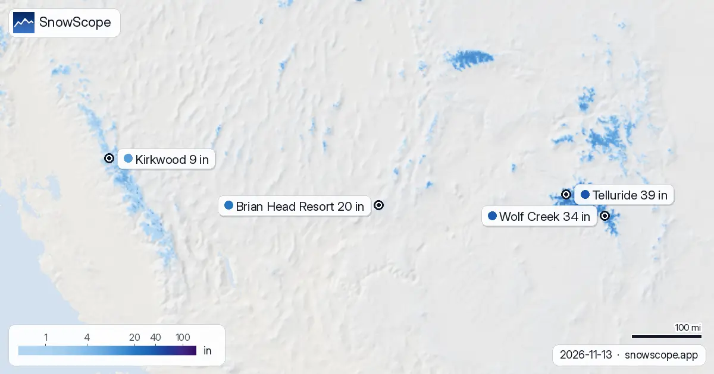

Brighton, Utah en diciembre: nieve de cañón desde 72 $
Brighton es lo que se obtiene cuando te saltas el pueblo-resort y subes directo hasta lo alto de Big Cottonwood Canyon. Según nuestro histórico de nieve, es una de las apuestas de diciembre más seguras de Utah, y sus forfaits online parten de 72 $ para quien compra pronto.
Consulta la previsión de nieve en tiempo real de Brighton Resort en la app SnowScopeEspesor de nieve, alertas de nieve polvo y mapa 3D, gratis.Base alta, trayecto corto
Desde Salt Lake City, Brighton está a solo una subida por el cañón, con una base de unos 8750 ft (2666 m) y remontes que llegan hasta unos 10450 ft (3185 m). Según nuestro mapeo tiene 8 remontes y unos 29 mi (47 km) de pistas. Esa altitud de base lo explica casi todo en diciembre: aquí la nieve empieza donde muchas estaciones de Utah terminan.
La nieve que cuaja suele llegar a media montaña a principios de octubre, según la mediana de nuestros 46 inviernos.

Diciembre, día a día
El 1 de diciembre, el grosor habitual a media montaña, a unos 9600 ft (2925 m), es de 28 in (70 cm). Para el 15 de diciembre sube a 37 in (94 cm), con 27 in (68 cm) en la base y 45 in (115 cm) arriba. El día de Navidad, media montaña llega a 48 in (122 cm).
En el 89 % de los inviernos pasados, media montaña tenía al menos 20 in (50 cm) el 15 de diciembre, y en el 98 % al menos 10 in (25 cm). Un diciembre flojo, uno de cada diez, dio igualmente 20 in (52 cm) en ese punto.

Lo que cuesta
Brighton fija sus precios de 2026/27 de forma dinámica. Los forfaits de día de invierno parten de 72 $, y el consejo de la estación es sencillo: comprar pronto para conseguir la mejor tarifa. Las fechas de vacaciones y las compras tardías cuestan más, y aquí solo citamos el precio de salida que hemos podido comprobar.
Para una estancia más larga, la Go Card carga tres, cuatro o cinco días completos en una sola tarjeta, con hasta un 40 % de descuento sobre la tarifa de día completo. No hemos podido verificar una cifra en dólares para esta tarjeta, así que conviene revisar la página de la estación para las fechas elegidas.
Brighton frente a Park City y Beaver Mountain
Park City es la famosa vecina al otro lado de la cresta. En un 15 de diciembre típico, su media montaña tiene 25 in (64 cm), y el 72 % de los inviernos tuvo 20 in o más, claramente por debajo de las cifras de Brighton. Aquí no hemos comparado los precios de los forfaits.
Beaver Mountain, la estación familiar cerca de Logan, cobra un precio único de 75 $ por el forfait de adulto, pero su media montaña tenía solo 22 in (57 cm) en un 15 de diciembre típico, con el 57 % de los inviernos por encima de 20 in. Brighton cuesta más o menos lo mismo si se encuentra un día al precio de salida, con bastante más nieve detrás.
¿Ha cambiado el inicio de temporada?
Un poco. En los primeros 15 inviernos de nuestro registro (1980-81 a 1994-95), media montaña mantenía 50 in (128 cm) en un 15 de diciembre típico y todos los inviernos llegaban a 20 in o más. En los últimos 15 inviernos (2011-12 a 2025-26), el valor medio fue de 27 in (68 cm) y el 73 % superó los 20 in. El invierno pasado solo dio 17 in (43 cm) en esa fecha. Diciembre en Brighton sigue siendo fiable; simplemente es algo menos seguro que antes.
Consejos para esquiadores
- Compra online lo antes posible: el precio de salida es para quienes compran primero.
- Evita el tramo de fiestas de finales de diciembre si el precio es lo más importante.
- Big Cottonwood Canyon tiene normas de tracción durante las tormentas: lleva cadenas o usa un 4x4 con buenos neumáticos, o coge el autobús.
- Mira la previsión a dos semanas antes de reservar un vuelo tardío: un diciembre seco puede dejar finas las pistas bajas.
Referencias y créditos
- Brighton Resort, lift tickets 2026/27 (official) www.brightonresort.com/lift-tickets
- Beaver Mountain, tickets and passes 2026-2027 (official) www.skithebeav.com/tickets-and-passes/
- OpenSkiMap (mapped lifts and runs) openskimap.org/
- avalanche.org, US avalanche centers and forecasts avalanche.org/
Sobre estas cifras
Cifras de nieve: histórico de nieve de SnowScope, 46 inviernos pasados (1980-81 a 2025-26) en las alturas indicadas (base, media, cima), una reconstrucción de la nieve pasada para una zona corregida por altitud (basada en ERA5-Land; Snow_Hydro 1 km para Marruecos), no los partes de la estación. Nieve actual: el mapa de SnowScope. Remontes, pistas y alturas: cartografía OpenSkiMap. Precios: las páginas oficiales listadas abajo, consultadas el 13 de noviembre de 2026; los precios dinámicos cambian con la fecha y la demanda.
Boletines oficiales de aludes: Utah Avalanche Center
Citar este informe
Para investigación, docencia o prensa: cifras y gráficos reutilizables libremente bajo CC BY 4.0 con esta cita.
SnowScope (2026), Brighton, Utah en diciembre: nieve de cañón desde 72 $, https://snowscope.app/blog/es/2026/11/brighton-utah-december-lift-tickets-snow.html, consultado el 2026-11-14
SnowScope (Atlas Labs). (2026, November 14). Brighton, Utah en diciembre: nieve de cañón desde 72 $. SnowScope snow reports. https://snowscope.app/blog/es/2026/11/brighton-utah-december-lift-tickets-snow.html
BibTeX
@misc{snowscope2026brightonutahdecemberlift,
author = {{SnowScope (Atlas Labs)}},
title = {Brighton, Utah en diciembre: nieve de cañón desde 72 $},
year = {2026},
month = nov,
howpublished = {\url{https://snowscope.app/blog/es/2026/11/brighton-utah-december-lift-tickets-snow.html}},
note = {Published 2026-11-14 15:27 UTC; accessed 2026-11-14}
}· CC BY 4.0 · Métodos, datos y herramientas →
Brighton Resort: nieve y temperatura según la altura, este invierno vs el pasado (herramientas) →
Sigue Brighton Resort
Gratis: un aviso cuando llega la nieve y la previsión cada mañana.
Más partes de nieve

39 in (99 cm) en la parte alta: por eso Telluride encabeza nuestra lista. Espesor de hoy, nieve nueva de las últimas 72 horas, previsión: juntos dan …

16 estaciones de esquí económicas de EE. UU. clasificadas según las probabilidades de nieve en diciembre de 46 inviernos pasados, con los precios diarios verificados: desde 49 $ entre semana hasta 125 $ o más.

Indy Base Pass 419 $, Indy+ 469 $, dos días en cada estación asociada. Lo comparamos con los precios diarios verificados de siete estaciones Indy en diciembre, y sus probabilidades de nieve.